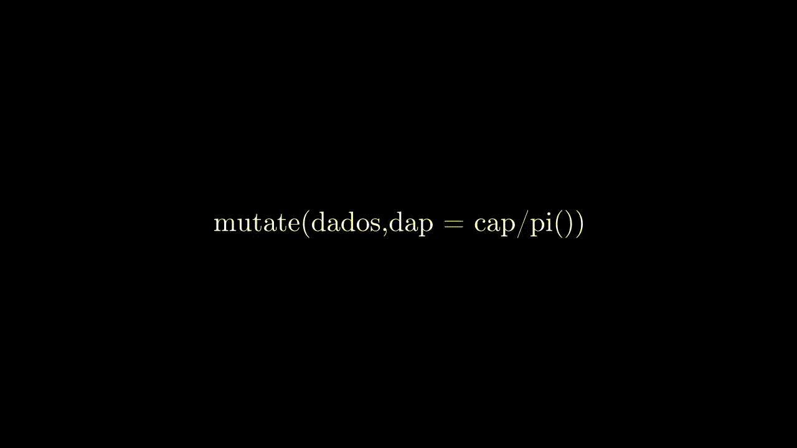
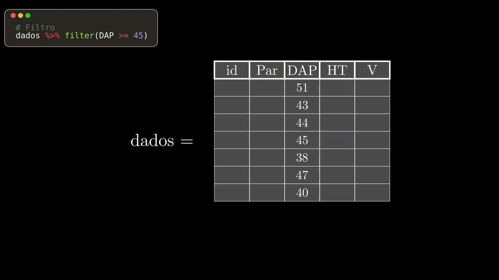
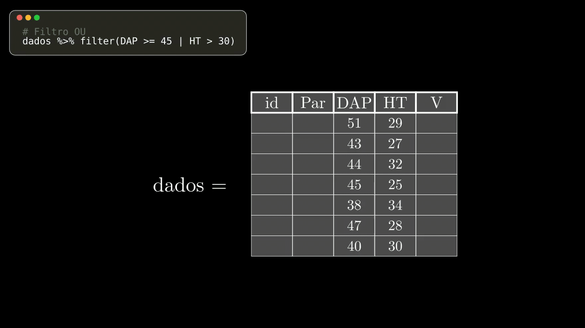
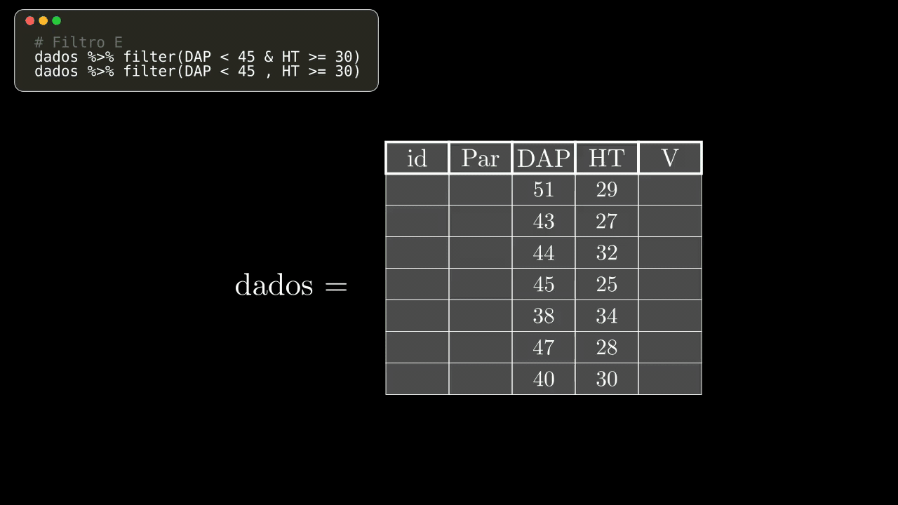
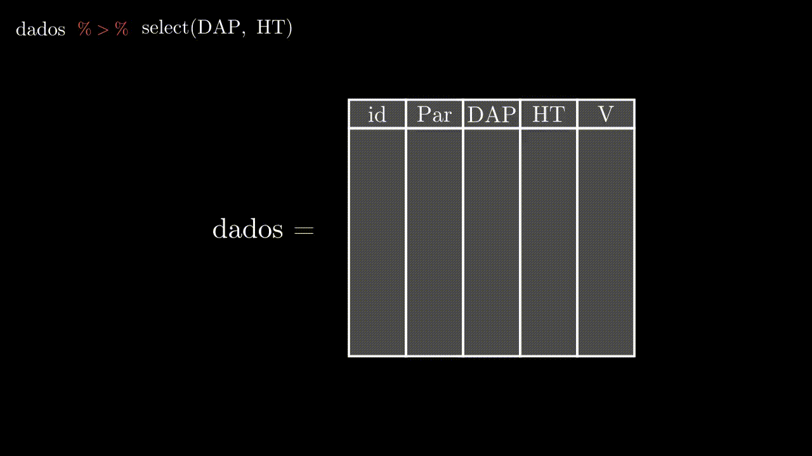
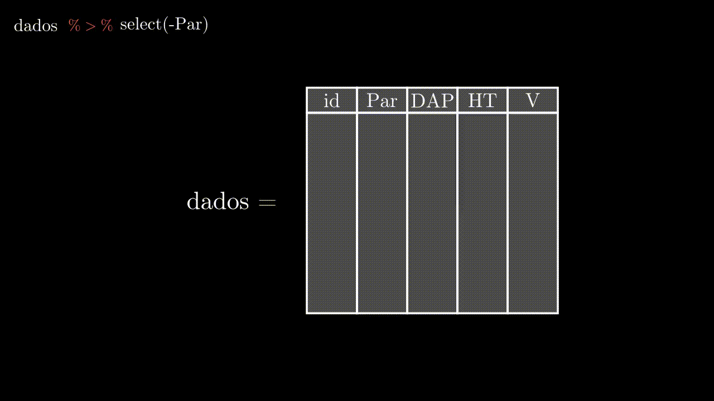
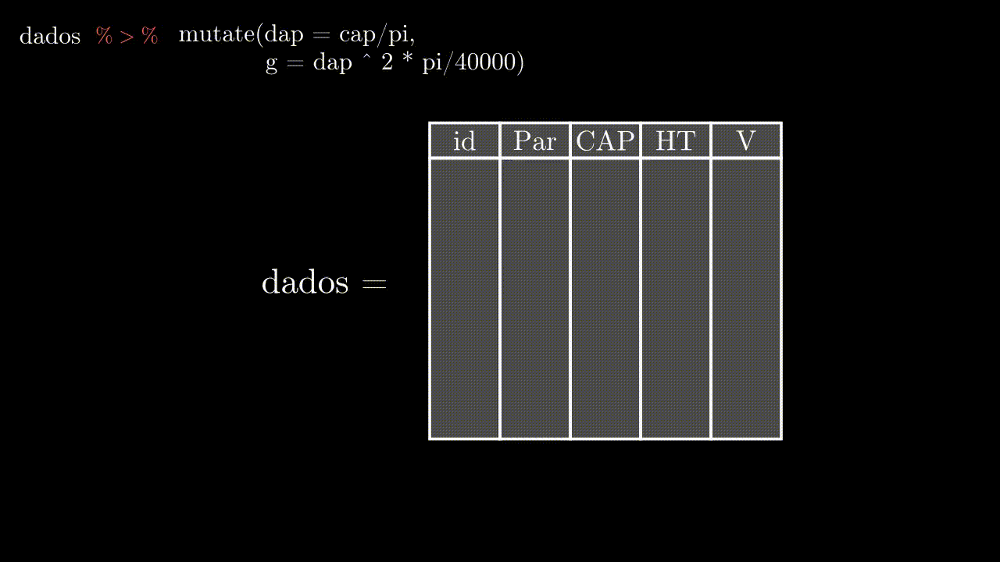
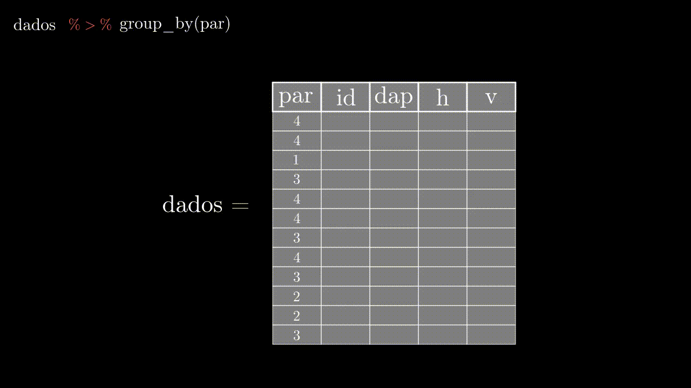
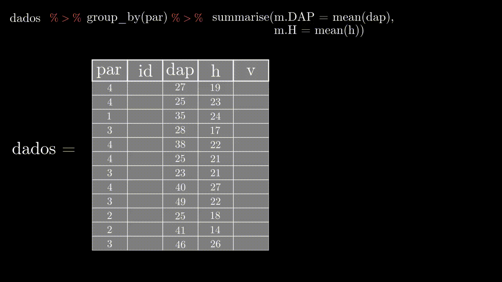
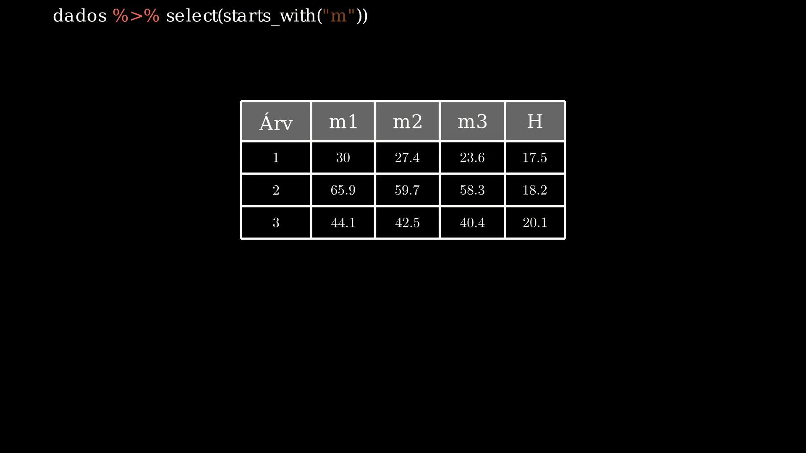

#install.packages("tidyverse")
library(tidyverse)dplyr
Pacotes
Esse material foca principalmente no uso do pacote dplyr, porém será carregado o pacote tidyverse, que contém diversos outros pacotes inclusos, entre eles o dplyre o ggplot2.
Carregando Dados
O banco de dados utilizado é um exemplo de parcelas de inventário florestal, onde foram obtidas, entre outras variáveis, o nome científico da espécie, o CAP, altura comercial e altura total.
dados <- read.csv2("data/dados_dplyr.csv", h = T)
str(dados)'data.frame': 762 obs. of 13 variables:
$ par : int 3 3 3 3 3 3 3 3 3 3 ...
$ ind : int 1 2 3 4 5 6 7 8 8 9 ...
$ fam : chr "Euphorbiaceae" "Meliaceae" "Lauraceae" "Elaeocarpaceae" ...
$ cient : chr "Alchornea triplinervia" "Guarea macrophylla" "Ocotea dispersa" "Sloanea guianensis" ...
$ autor : chr "(Spreng.) M�ll.Arg." "Vahl" "(Nees & Mart.) Mez" "(Aubl.) Benth." ...
$ verna : chr "Tanheiro" "Caf�-bravo" "Canela-sab�o" "Urucurana" ...
$ cap : num 82 18 20 57 70 17 44 33 31 17 ...
$ ht : num 17 5.5 6 10 12 8 12 10 10 6 ...
$ hc : num 6 3 4 7 7 3 7 6 6 3 ...
$ qf : int 2 1 2 3 3 3 3 2 2 3 ...
$ qc : int 1 1 1 2 2 3 2 1 1 3 ...
$ estrato: chr "dossel" "sub" "sub" "inter" ...
$ obs : chr "" "" "" "" ...Introdução
O pacote dplyr é um conjunto de ferramentas para manipulação de bancos de dados, e fornece alternativas rápidas e intuitivas para resolver as principais demandas de análise, manipulação e resumo dos dados.
Motivação
Tomando-se como exemplo um inventário florestal, deseja-se obter a partir dos dados brutos, um resumo do número de indivíduos, diâmetro médio e área basal por parcela.
Usando o pacote base
# Calcular DAP e área transversal
dados$dap <- dados$cap/pi
dados$g <- (dados$dap**2*pi)/40000
# Calcular número de indivíduos
n.ind <- table(dados$par)
# Calcular o DAP médio e a área basal da parcela
dap.m <- tapply(X = dados$dap, INDEX = dados$par, FUN = mean, na.rm=T)
G <- tapply(X = dados$g, INDEX = dados$par, FUN = sum, na.rm=T)
resumo.base <- data.frame(n.ind, dap.m, G)
resumo.base Var1 Freq dap.m G
3 3 47 13.33515 1.2696864
6 6 36 16.49022 1.2675975
7 7 49 11.68002 0.7185567
8 8 53 12.02371 0.7833129
9 9 49 13.69707 0.8875057
10 10 39 14.23008 0.9500854
11 11 62 12.64512 0.9436257
12 12 37 13.39052 0.7791371
13 13 22 21.13867 1.0729828
14 14 38 17.55730 1.3661065
15 15 42 14.77867 1.1987550
16 16 30 16.43010 0.8968162
17 17 42 15.10456 1.1259496
18 18 37 14.69387 0.8780618
19 19 46 16.23034 1.4723444
20 20 29 19.07664 1.7538238
21 21 50 12.45228 1.1429553
22 22 54 14.33279 1.5268907Usando o pacote dplyr
dados %>%
mutate(dap = cap/pi, g = (dap^2*pi)/40000) %>%
group_by(par) %>%
summarise(n.ind = n(), dap.m = mean(dap, na.rm=T), G = sum(g, na.rm=T))# A tibble: 18 × 4
par n.ind dap.m G
<int> <int> <dbl> <dbl>
1 3 47 13.3 1.27
2 6 36 16.5 1.27
3 7 49 11.7 0.719
4 8 53 12.0 0.783
5 9 49 13.7 0.888
6 10 39 14.2 0.950
7 11 62 12.6 0.944
8 12 37 13.4 0.779
9 13 22 21.1 1.07
10 14 38 17.6 1.37
11 15 42 14.8 1.20
12 16 30 16.4 0.897
13 17 42 15.1 1.13
14 18 37 14.7 0.878
15 19 46 16.2 1.47
16 20 29 19.1 1.75
17 21 50 12.5 1.14
18 22 54 14.3 1.53 Colocando mais uma vez o código utilizado, agora mais desmembrado e explicado, é possível perceber que todos os comandos estão conectados por um operador %>%, chamado pipe. Esse operador é similar ao operador “+” utilizado para conectar os comandos do ggplot2, e sua principal vantagem é que diversas operações podem ser realizadas sem a necessidade de criar e armazenar novos objetos, tornando o script mais rápido e fluido.
resumo.dplyr <- dados %>%
mutate(dap = cap/pi, # mutate cria novas colunas no data frame
g = (dap^2*pi)/40000) %>%
group_by(par) %>% # group_by agrupa os dados com base na variável informada
summarise(n.ind = n(), # summarise resume as informações
dap.m = mean(dap, na.rm=T),
G = sum(g, na.rm=T))
resumo.dplyrNo exemplo acima, mutate() cria novas colunas no data frame; group_by() agrupa os dados com base na coluna desejada, e summarise() resume os grupos com base na função informada (n(), mean() e sum()).
Pipes %>%
Os pipes %>% são operadores muito utilizados no pacote dplyr. Eles permitem encadear sequências de comandos, de forma similar ao operador “+” no pacote ggplot2.
De forma resumida, o operador pega tudo que está à esquerda, e joga como primeiro argumento na função que está à sua direita.
#Selecionar as primeiras 10 linhas do data frame
df <- dados[1:10, ]
#Selecionar apenas as colunas "cient", "cap" e "ht"
select(df, cient, cap, ht) cient cap ht
1 Alchornea triplinervia 82 17.0
2 Guarea macrophylla 18 5.5
3 Ocotea dispersa 20 6.0
4 Sloanea guianensis 57 10.0
5 Ilex dumosa 70 12.0
6 Myrcia reitzii 17 8.0
7 Calophyllum brasiliense 44 12.0
8 Sloanea guianensis 33 10.0
9 Sloanea guianensis 31 10.0
10 Myrcia racemosa 17 6.0#Selecionar apenas as colunas "cient", "cap" e "ht"
df %>% select(cient, cap, ht) cient cap ht
1 Alchornea triplinervia 82 17.0
2 Guarea macrophylla 18 5.5
3 Ocotea dispersa 20 6.0
4 Sloanea guianensis 57 10.0
5 Ilex dumosa 70 12.0
6 Myrcia reitzii 17 8.0
7 Calophyllum brasiliense 44 12.0
8 Sloanea guianensis 33 10.0
9 Sloanea guianensis 31 10.0
10 Myrcia racemosa 17 6.0Essa lógica se mantém para o uso de mais comandos em sequência, lembrando que o operador pega tudo que está à esquerda e insere como primeiro argumento no comando à direita.
df %>% select(cient, cap, ht) %>% mutate(dap = cap/pi) cient cap ht dap
1 Alchornea triplinervia 82 17.0 26.101411
2 Guarea macrophylla 18 5.5 5.729578
3 Ocotea dispersa 20 6.0 6.366198
4 Sloanea guianensis 57 10.0 18.143664
5 Ilex dumosa 70 12.0 22.281692
6 Myrcia reitzii 17 8.0 5.411268
7 Calophyllum brasiliense 44 12.0 14.005635
8 Sloanea guianensis 33 10.0 10.504226
9 Sloanea guianensis 31 10.0 9.867606
10 Myrcia racemosa 17 6.0 5.411268df %>% select(cient, ht) %>% mutate(dap = cap/pi)Error in `mutate()`:
ℹ In argument: `dap = cap/pi`.
Caused by error:
! objeto 'cap' não encontradoEsse último exemplo resultou em um erro pois a variável “cap” não foi selecionada, e como consequência não há como calcular a nova variável “dap”. O segundo operador %>% recebe um data frame contendo apenas as variáveis “cient” e “ht”, e insere esse data frame no início do comando mutate(). O erro surge por não existir a variável “dap” no data frame fornecido.

Funções
filter()
A função filter() é utilizada para filtrar linhas que satisfaçam uma determinada condição.
dados <- as_tibble(dados)
dados %>% filter(par == 6)# A tibble: 36 × 15
par ind fam cient autor verna cap ht hc qf qc estrato
<int> <int> <chr> <chr> <chr> <chr> <dbl> <dbl> <dbl> <int> <int> <chr>
1 6 1 Euphorbi… Alch… (Spr… Tanh… 63 11 6 1 2 dossel
2 6 2 Bignonia… Jaca… Cham. Caro… 28 5 3 2 1 sub
3 6 3 Primulac… Myrs… (Sw.… Capo… 27 9 5 1 1 dossel
4 6 4 Euphorbi… Alch… (Spr… Tanh… 21 7 5 1 2 inter
5 6 5 Melastom… Pler… DC. Jaca… 21 7 4.5 1 1 inter
6 6 6 Lauraceae Ocot… Mez Cane… 70 12 1 3 1 dossel
7 6 6 Lauraceae Ocot… Mez Cane… 67 12 1 3 1 dossel
8 6 7 Meliaceae Guar… Vahl Caf�… 18 6 2 3 1 sub
9 6 8 Calophyl… Calo… Camb… Guan… 212 17 8 1 1 dossel
10 6 9 Myrtaceae Myrc… Kiae… Camb… 25 6 2 2 2 dub
# ℹ 26 more rows
# ℹ 3 more variables: obs <chr>, dap <dbl>, g <dbl>dados %>% filter(cap >= 140)# A tibble: 23 × 15
par ind fam cient autor verna cap ht hc qf qc estrato
<int> <int> <chr> <chr> <chr> <chr> <dbl> <dbl> <dbl> <int> <int> <chr>
1 3 21 "Calophy… Calo… "Cam… "Gua… 199 25 10 1 1 "emerg"
2 3 29 "Calophy… Calo… "Cam… "Gua… 200 24 8 1 1 "emerg"
3 6 8 "Calophy… Calo… "Cam… "Gua… 212 17 8 1 1 "dosse…
4 6 13 "Calophy… Calo… "Cam… "Gua… 141 17 12 1 1 "dosse…
5 10 22 "Laurace… Nect… "Nee… "Can… 148 17 10 2 3 "dosse…
6 10 25 "" Morta "" "" 142 NA NA NA NA ""
7 12 11 "Sapinda… Mata… "Rad… "Mat… 163 16 2 2 1 "dosse…
8 13 22 "Calophy… Calo… "Cam… "Gua… 229 17 10 1 1 "emerg"
9 14 4 "Euphorb… Alch… "(Sp… "Tan… 165 19 7 2 1 "emerg"
10 14 19 "Euphorb… Alch… "(Sp… "Tan… 141 20 7 2 1 "emerg"
# ℹ 13 more rows
# ℹ 3 more variables: obs <chr>, dap <dbl>, g <dbl>dados %>% filter(cap >= 140 & par == 10)# A tibble: 2 × 15
par ind fam cient autor verna cap ht hc qf qc estrato
<int> <int> <chr> <chr> <chr> <chr> <dbl> <dbl> <dbl> <int> <int> <chr>
1 10 22 "Lauracea… Nect… "Nee… "Can… 148 17 10 2 3 "dosse…
2 10 25 "" Morta "" "" 142 NA NA NA NA ""
# ℹ 3 more variables: obs <chr>, dap <dbl>, g <dbl># Separar as condições com vírgula é equivalente
df <- dados %>% filter(cap >= 140)
Filtro OU ‘|’ - União de condições
O operador ‘|’ representa união entre condições, i.e., mantém as linhas que satisfaçam PELO MENOS uma das condições.
print(df)# A tibble: 23 × 15
par ind fam cient autor verna cap ht hc qf qc estrato
<int> <int> <chr> <chr> <chr> <chr> <dbl> <dbl> <dbl> <int> <int> <chr>
1 3 21 "Calophy… Calo… "Cam… "Gua… 199 25 10 1 1 "emerg"
2 3 29 "Calophy… Calo… "Cam… "Gua… 200 24 8 1 1 "emerg"
3 6 8 "Calophy… Calo… "Cam… "Gua… 212 17 8 1 1 "dosse…
4 6 13 "Calophy… Calo… "Cam… "Gua… 141 17 12 1 1 "dosse…
5 10 22 "Laurace… Nect… "Nee… "Can… 148 17 10 2 3 "dosse…
6 10 25 "" Morta "" "" 142 NA NA NA NA ""
7 12 11 "Sapinda… Mata… "Rad… "Mat… 163 16 2 2 1 "dosse…
8 13 22 "Calophy… Calo… "Cam… "Gua… 229 17 10 1 1 "emerg"
9 14 4 "Euphorb… Alch… "(Sp… "Tan… 165 19 7 2 1 "emerg"
10 14 19 "Euphorb… Alch… "(Sp… "Tan… 141 20 7 2 1 "emerg"
# ℹ 13 more rows
# ℹ 3 more variables: obs <chr>, dap <dbl>, g <dbl>df %>% filter(cap >= 200 | cient == 'Matayba intermedia')# A tibble: 8 × 15
par ind fam cient autor verna cap ht hc qf qc estrato
<int> <int> <chr> <chr> <chr> <chr> <dbl> <dbl> <dbl> <int> <int> <chr>
1 3 29 Calophyll… Calo… "Cam… "Gua… 200 24 8 1 1 emerg
2 6 8 Calophyll… Calo… "Cam… "Gua… 212 17 8 1 1 dossel
3 12 11 Sapindace… Mata… "Rad… "Mat… 163 16 2 2 1 dossel
4 13 22 Calophyll… Calo… "Cam… "Gua… 229 17 10 1 1 emerg
5 16 5 Sapindace… Mata… "Rad… "Mat… 150 15 8 2 1 emerg
6 20 8 Sapotaceae Mani… "(Ma… "Ma�… 338 30 20 1 1 e
7 21 9 Fabaceae Pter… "Vah… "Pau… 230 25 6 2 1 dossel
8 22 17 Indet. Inde… "" "" 228 23 10 2 1 dossel
# ℹ 3 more variables: obs <chr>, dap <dbl>, g <dbl>
Filtro E ‘&’ - Interseção de condições
O operador ‘&’ representa interseção de condições, i.e., mantém as linhas que satisfaçam TODAS as condições.
df %>% filter(dap > 50 & ht >= 20)# A tibble: 6 × 15
par ind fam cient autor verna cap ht hc qf qc estrato
<int> <int> <chr> <chr> <chr> <chr> <dbl> <dbl> <dbl> <int> <int> <chr>
1 3 21 Calophyll… Calo… "Cam… "Gua… 199 25 10 1 1 emerg
2 3 29 Calophyll… Calo… "Cam… "Gua… 200 24 8 1 1 emerg
3 20 8 Sapotaceae Mani… "(Ma… "Ma�… 338 30 20 1 1 e
4 20 25 Fabaceae Pter… "Vah… "Pau… 163 26 10 1 1 dossel
5 21 9 Fabaceae Pter… "Vah… "Pau… 230 25 6 2 1 dossel
6 22 17 Indet. Inde… "" "" 228 23 10 2 1 dossel
# ℹ 3 more variables: obs <chr>, dap <dbl>, g <dbl># Separar as condições por vírgula é análogo à interseção de condições
df %>% filter(dap > 50, ht >= 20)# A tibble: 6 × 15
par ind fam cient autor verna cap ht hc qf qc estrato
<int> <int> <chr> <chr> <chr> <chr> <dbl> <dbl> <dbl> <int> <int> <chr>
1 3 21 Calophyll… Calo… "Cam… "Gua… 199 25 10 1 1 emerg
2 3 29 Calophyll… Calo… "Cam… "Gua… 200 24 8 1 1 emerg
3 20 8 Sapotaceae Mani… "(Ma… "Ma�… 338 30 20 1 1 e
4 20 25 Fabaceae Pter… "Vah… "Pau… 163 26 10 1 1 dossel
5 21 9 Fabaceae Pter… "Vah… "Pau… 230 25 6 2 1 dossel
6 22 17 Indet. Inde… "" "" 228 23 10 2 1 dossel
# ℹ 3 more variables: obs <chr>, dap <dbl>, g <dbl>
select()
A função select() é utilizada para selecionar ou remover colunas.
# Seleciona apenas as colunas 'cap' e 'ht'. Note que não é preciso escrever os nomes das colunas entre aspas.
dados %>% select(cap, ht)# A tibble: 762 × 2
cap ht
<dbl> <dbl>
1 82 17
2 18 5.5
3 20 6
4 57 10
5 70 12
6 17 8
7 44 12
8 33 10
9 31 10
10 17 6
# ℹ 752 more rows
Para remover uma coluan do data frame, usa-se o sinal de menos ‘-’ para remover a coluna desejada.
dados %>% select(-par)# A tibble: 762 × 14
ind fam cient autor verna cap ht hc qf qc estrato obs
<int> <chr> <chr> <chr> <chr> <dbl> <dbl> <dbl> <int> <int> <chr> <chr>
1 1 Euphorbi… Alch… (Spr… Tanh… 82 17 6 2 1 dossel ""
2 2 Meliaceae Guar… Vahl Caf�… 18 5.5 3 1 1 sub ""
3 3 Lauraceae Ocot… (Nee… Cane… 20 6 4 2 1 sub ""
4 4 Elaeocar… Sloa… (Aub… Uruc… 57 10 7 3 2 inter ""
5 5 Aquifoli… Ilex… Reis… Ca�na 70 12 7 3 2 dossel ""
6 6 Myrtaceae Myrc… (D.L… Camb… 17 8 3 3 3 sub ""
7 7 Calophyl… Calo… Camb… Guan… 44 12 7 3 2 inter ""
8 8 Elaeocar… Sloa… (Aub… Uruc… 33 10 6 2 1 inter "bif"
9 8 Elaeocar… Sloa… (Aub… Uruc… 31 10 6 2 1 inter "bif"
10 9 Myrtaceae Myrc… (O.B… Guam… 17 6 3 3 3 sub "bif"
# ℹ 752 more rows
# ℹ 2 more variables: dap <dbl>, g <dbl># Para remover mais de uma variável (coluna), basta concatenar as variáveis desejadas em um vetor.
dados %>% select(-c(par, fam, cient, autor, verna))# A tibble: 762 × 10
ind cap ht hc qf qc estrato obs dap g
<int> <dbl> <dbl> <dbl> <int> <int> <chr> <chr> <dbl> <dbl>
1 1 82 17 6 2 1 dossel "" 26.1 0.0535
2 2 18 5.5 3 1 1 sub "" 5.73 0.00258
3 3 20 6 4 2 1 sub "" 6.37 0.00318
4 4 57 10 7 3 2 inter "" 18.1 0.0259
5 5 70 12 7 3 2 dossel "" 22.3 0.0390
6 6 17 8 3 3 3 sub "" 5.41 0.00230
7 7 44 12 7 3 2 inter "" 14.0 0.0154
8 8 33 10 6 2 1 inter "bif" 10.5 0.00867
9 8 31 10 6 2 1 inter "bif" 9.87 0.00765
10 9 17 6 3 3 3 sub "bif" 5.41 0.00230
# ℹ 752 more rows
mutate()
A função mutate() permite criar e adicionar novas variáveis (colunas) no dataframe, utilizando tanto variáveis externas quanto do próprio dataframe.
# Carregando novamente os dados para criar variáveis
dados <- read_csv2('data/dados_dplyr.csv')ℹ Using "','" as decimal and "'.'" as grouping mark. Use `read_delim()` for more control.Rows: 762 Columns: 13
── Column specification ────────────────────────────────────────────────────────
Delimiter: ";"
chr (6): fam, cient, autor, verna, estrato, obs
dbl (7): par, ind, cap, ht, hc, qf, qc
ℹ Use `spec()` to retrieve the full column specification for this data.
ℹ Specify the column types or set `show_col_types = FALSE` to quiet this message.# Criando as variáveis dap e g
dados <- dados %>% mutate(dap = cap/pi,
g = dap^2*pi/40000)
head(dados %>% select(dap, g))# A tibble: 6 × 2
dap g
<dbl> <dbl>
1 26.1 0.0535
2 5.73 0.00258
3 6.37 0.00318
4 18.1 0.0259
5 22.3 0.0390
6 5.41 0.00230Note que, para esse caso, a variável g fez uso da variável dap recém criada. Esse recurso chamado “on the fly” é oportuno para criar de forma encadeada diversas variáveis de maneira simples e direta Além disso, também fica implícito que há uma ordem de criação das variáveis dentro da função mutate().

group_by()
A função group_by() agrupa o data frame com base em uma variável especificada. A função não faz alterações explícitas no dataframe, apenas marca internamente os grupos para que alguma outra função seja realizada sobre esses grupos marcados.
# Data frame antes da operação group_by()
head(tibble(dados))# A tibble: 6 × 15
par ind fam cient autor verna cap ht hc qf qc estrato
<dbl> <dbl> <chr> <chr> <chr> <chr> <dbl> <dbl> <dbl> <dbl> <dbl> <chr>
1 3 1 Euphorbia… Alch… (Spr… Tanh… 82 17 6 2 1 dossel
2 3 2 Meliaceae Guar… Vahl Caf�… 18 5.5 3 1 1 sub
3 3 3 Lauraceae Ocot… (Nee… Cane… 20 6 4 2 1 sub
4 3 4 Elaeocarp… Sloa… (Aub… Uruc… 57 10 7 3 2 inter
5 3 5 Aquifolia… Ilex… Reis… Ca�na 70 12 7 3 2 dossel
6 3 6 Myrtaceae Myrc… (D.L… Camb… 17 8 3 3 3 sub
# ℹ 3 more variables: obs <chr>, dap <dbl>, g <dbl># Data frame após a operação group_by()
head(dados %>% group_by(par))# A tibble: 6 × 15
# Groups: par [1]
par ind fam cient autor verna cap ht hc qf qc estrato
<dbl> <dbl> <chr> <chr> <chr> <chr> <dbl> <dbl> <dbl> <dbl> <dbl> <chr>
1 3 1 Euphorbia… Alch… (Spr… Tanh… 82 17 6 2 1 dossel
2 3 2 Meliaceae Guar… Vahl Caf�… 18 5.5 3 1 1 sub
3 3 3 Lauraceae Ocot… (Nee… Cane… 20 6 4 2 1 sub
4 3 4 Elaeocarp… Sloa… (Aub… Uruc… 57 10 7 3 2 inter
5 3 5 Aquifolia… Ilex… Reis… Ca�na 70 12 7 3 2 dossel
6 3 6 Myrtaceae Myrc… (D.L… Camb… 17 8 3 3 3 sub
# ℹ 3 more variables: obs <chr>, dap <dbl>, g <dbl># A função não modifica nenhuma observação ou variável do data frame
summarise()
summarise() resume cada grupo em uma menor quantidade de linhas por meio de uma função desejada, por exemplo a função média ou soma. A função aplicada deve ser capaz de receber um vetor e retornar o resultado de alguma operação aplicada sobre esse vetor. Caso o data frame não tenha grupos (sem utilização da função group_by()), o resultado será uma única linha resumindo a informação de todas as observações. summarize() e summarise() são sinônimos.
# Sem a criação de grupos, a função mean() retornará a média de todas as observações
dados %>% summarise(media_dap = mean(dap))# A tibble: 1 × 1
media_dap
<dbl>
1 14.5# Com a definição de grupo por família botânica, a função retornará a operação por grupo. Neste caso por família botânica.
dados %>% group_by(fam) %>% summarise(media_ht = mean(ht))# A tibble: 41 × 2
fam media_ht
<chr> <dbl>
1 Anacardiaceae 13.4
2 Annonaceae 9.8
3 Aquifoliaceae 10.2
4 Araliaceae 11.5
5 Arecaceae 5.51
6 Bignoniaceae 5
7 Boraginaceae 8.2
8 Burseraceae 14.2
9 Calophyllaceae 16.1
10 Celastraceae 9.75
# ℹ 31 more rows
pivot_longer()
pivot_longer()

<tidy-select>
